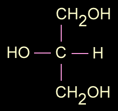
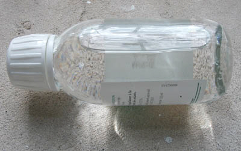

Description

La formule de la
glycérine est CH2OH-CHOH-CH2OH (deux fonctions
alcool primaires CH2OH et une secondaire CHOH, soit C3H8O3).
Elle présente
donc trois fonctions alcool (elle est un trialcool)
et se combine avec des acides (un triacide ou
trois acides différents) pour former des esters
qui ne sont autres que les corps gras
(triglycérides).
Lire l'encadré
Formation d'un triglycéride in La saponification et l'estérification.
Les graisses qui sont en nous,
êtres vivants, celles que nous consommons (voir lipides, glycéride)
ainsi que les huiles, dont toutes celles qui sont employées en peinture, sont le
résultat de ces combinaisons (voir esterification).
Son point d'ébullition est de 290°C.
La glycérine
produit
des esters qui ont généralement la particularité d'être souples. Elle est
elle-même un assouplissant (voir ci-dessous Utilisation
comme adjuvant en peinture), mais dans le contexte des arts plastiques,
il est possible et souvent préférable d'assouplir des produits à l'aide d'esters
glycérique lorsque c'est possible. En effet, la glycérine seule n'est pas
liante. Elle ne fait qu'éloigner les molécules de liants, de pigments, les
résines, etc. (voir ci-dessous, utilisation comme adjuvant). Pour devenir
liante, elle doit se combiner à un acide insaturé
sous la forme d'un ester.
La fabrication artificielle d'esters triglycérides est relativement difficile
- bien que l'industrie maîtrise maintenant parfaitement ce processus -
car l'efficacité de la glycérine dans le lent processus
d'estérification est plutôt faible comparativement aux autres alcools.
Concrètement, ce produit est disponible en
pharmacie. Appelé glycérol par les
chimistes, il donne lieu à une multitude de produits pharmaceutiques,
cosmétiques et industriels. Il est d'ailleurs
lui-même un sous-produit de la fabrication des savons et
bougies. En tant que résidu, il aurait été, selon certaines sources, un polluant important des eaux avant que l'on songe
à des emplois industriels. Information non confirmée.
La glycérine serait hygroscopique
selon certains auteurs. Vérification faite, il semblerait que des conditions
précises doivent être réunies pour qu'une réaction à l'eau se produise. Il faut
tenir compte, notamment, de la charge électrochimique du support qui, elle, est
bien déterminante, nous l'avons constaté. Il n'y a
vraiment pas d'hygroscopie
spécifique à la glycérine ni à ses esters dans l'ensemble. Par contre,
certains esters peuvent être hygroscopiques de par les propriétés des acides
qu'ils contiennent.
Il
est beaucoup plus important de souligner l'effet parfois radical des
alcalis sur les esters
glycériques.
Utilisation
comme adjuvant en peinture
La glycérine, nous
l'avons dit, est employée comme
agent
assouplissant mais aussi comme retardateur du
séchage pour différentes peintures à l'eau et badigeons.
Fortement épaisse (voir
l'effet de loupe sur la photo), elle "dégonfle" considérablement au séchage,
formant finalement, employée pure, une couche très fine sans plis, sans
craquelures, sans accident. Son temps de séchage n'est pas celui de l'huile de lin
mais il est quand même assez long. Elle n'a aucune efficacité en elle
même en tant que liant. Lorsqu'elle est ajoutée à une pâte, elle doit être
considérée comme un diluant, c'est-à-dire un produit qui va éloigner les
molécules "liantes" (insaturées) et diminuer la
viscosité de cette pâte. Elle peut donc fragiliser, appauvrir une peinture.

Elle crée des
interférences fugitives en surface lorsqu'elle est agitée. On remarque d'ailleurs
des effets « prismatiques » près du goulot du flacon sur la photo. Cette propriété
est discrète lorsque l'on ajoute de la glycérine à une peinture en faible
quantité.
Pour toutes ces raisons,
mais aussi parce que, en plus, elle affiche un important retrait au séchage, elle ne doit pas être
dosée fortement (1/20ème tout au plus du poids total environ pour éviter tout problème,
d'avantage, jusqu'à 1/10ème, ce qui est considérable, si l'on veut
"forcer" une substance à devenir plus souple ou si l'on souhaite
retarder grandement le séchage). Bien sûr, ces chiffres doivent être adaptés à
la nature de la pâte et du support. Ils ne sont présentés ici qu'à titre indicatif.
Dilution,
fabrication de savons
La glycérine se dissout dans l'alcool
et aussi dans l'eau quoique assez mollement, à la manière d'un sirop qui a
tendance à se
concentrer au fond du récipient si l'on n'agite pas le mélange. C'est cette manière de ne pas se mêler
naturellement qui autorise son extraction par décantation dans "l'eau glycérineuse",
le résidu de la fabrication des savons évoqué ci-dessus. La séparation par hauteurs différenciées
sur différentes étapes du processus serait l'une des principales clés de la
réussite du procédé de fabrication marseillais.
Une réputation
de blanchisseuse
Au point de vue de son utilisation à l'état pur dans les arts plastiques, la glycérine a
acquis à la fois à tort et à raison une réputation parfois mauvaise : elle "blanchirait". En fait,
c'est une utilisation inadéquate qui peut provoquer des altérations
par interaction avec des acides
présents dans la couche picturale ou le
support. Les
peintures et supports neutres ou faiblement chargés ne poseront aucun
problème. La glycérine peut même "neutraliser" partiellement l'acidité de certaines substances.
Ce lent processus peut cependant donner des résultats variés, pas toujours
souhaitables.
Voir Saponification.
Produits
contemporains à base de glycérine (peinture)
La glycérine, on l'a dit, est présente à l'état naturel dans des peintures
grasses traditionnelles. Depuis qu'elle a été synthétisée, les fabricants ont pu
créer de nouveaux produits tels les liants dits
"glycérophtaliques" et les liants alkydes.
L'acrylique et le vinyle ne contiennent pas de glycérine.
Il s'agit bien d'esters également mais leurs alcools ne sont pas glycériques.
Voir alcool, glycol, polyalcool.
Retour
début de page